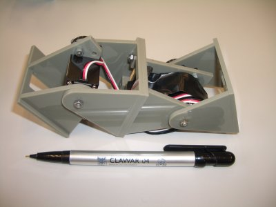

Un problema muy interesante es el de las configuraciones mínimas. ¿Cuál es el mínimo número de módulos necesarios para realizar la locomoción de un robot modular en 1 y 2 dimensiones?. Así fue como nació Minicube.
En entradas previas he hablado sobre los robots Cube Revolutions e Hypercube ambos de 8 módulos que pueden moverse en 1 y 2 dimensiones respectivamente. Si nos centramos en la locomoción en una dimensión, ¿Cuántos módulos necesitamos para que el robot se pueda desplazar? ¿8?, ¿7?, ¿3?, ¿1?…¿? La respuesta es 2.
En este vídeo se puede ver la locomoción de Minicube, compuesto únicamente por dos módulos Y1 que se mueven perpendicularmente al suelo.

Y muchos diréis, “Vale, mola, es muy chulo… pero ¿Para qué vale?” 🙂 Yo he estudiado este problema con estos objetivos en la cabeza:
Aprender un poco más sobre coordinación para conseguir locomoción. La manera en que se coordinan los servos para producir este moviento se puede aplicar a configuraciones mayores. Digamos que Minicube-1 contiene la “esencia del movimiento” 😉
El segundo punto es muy interesante. Imaginemos que hay una tubería recta (sin curvas) situada horizontalmente. Esta tubería por ejemplo puede estar conduciendo gas o puede ser un conducto de ventilación. Se ha producido un escape o ha aparecido algún tipo de microorganismo que queremos detectar. Una solución es introducir un robot modular de tipo gusano que recorra el tubo en busca del problema (el escape de gas o la bacteria).
Solución “centralizada”: Que el robot recorra el tubo desde un extremo al otro.
Otra solución: En vez de que el gusano analice el tubo secuencialmente, se podría dividir en M/2 minirobots, cada uno de ellos explorará una zona. Ahora el problema se está resolviendo de una forma “distribuida”. Una vez finalizada la tarea, los M/2 robots se podrían volver a juntar en un único robot.
Si el robot tiene 12 módulos, ¿Cuántos mini-robots como máximo se podrían tener? Como sabemos que la configuración mínima es de 2 módulos, la solución es fácil: 6 mini-robots. Luego el diseñador de la aplicación puede decidir si utilizar estos 6 mini-robots o un número menor: 4 de tres módulos, 2 de 6, etc… Pero nunca más de 6, o de lo contrario no se podrían desplazar.